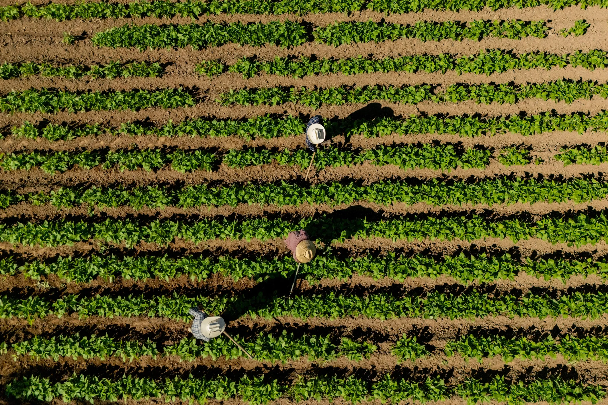

A warm, confident identity for connecting farms and communities.
Earthy color, expressive typography, and a clear, unmistakable mark.
Lead with the full logo.Use on covers, websites, and first introductions. Keep the original proportions and generous space around the mark.
Use the icon where space is limited.Use for avatars and supporting brand moments. Keep both marks white on a solid dark or saturated background. Never stretch or add effects.
Let green and cream lead. Use yellow and orange for moments of energy, sage for soft panels, and charcoal for body copy. Set small text in green on cream or yellow, or in cream on green.
Three complementary typefaces bring boldness, warmth, and clarity.
Use the project’s supplied font files to keep every touchpoint consistent.
Bold / 700
Hero statements, section titles, navigation.
Large scale, tight spacing, short headlines.
Regular · Italic · Bold · Bold Italic
Editorial headings and expressive accents.
Use italic sparingly for warmth.
Regular / 400 · Paragraphs, labels, buttons.
Comfortable line spacing and clear hierarchy.

Connecting farms and communities.
Making every harvest count.
Pair authentic farm photography with bold Biblon headlines and quiet Helvetica copy. Use rounded panels and generous margins. Keep text on calm, high-contrast surfaces.